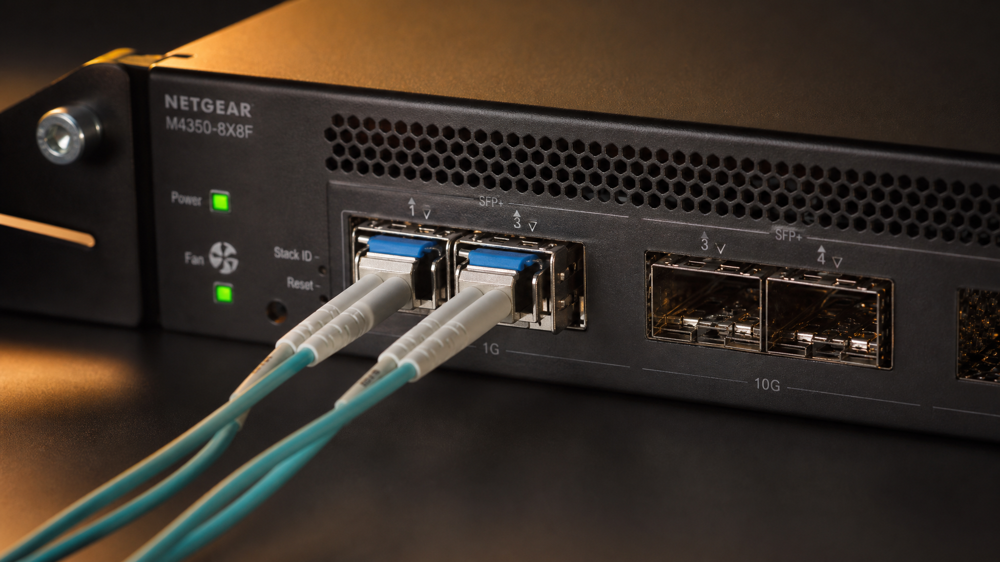
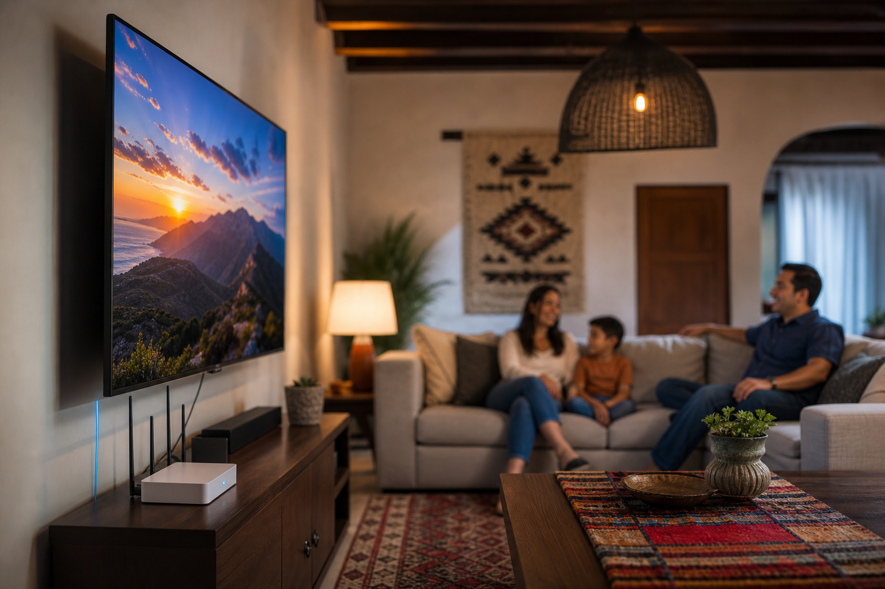

Izzi vs Totalplay, Telmex, Megacable comparativa 2026: comparativa definitiva 2026
La izzi vs totalplay telmex megacable comparativa 2026 es, sin duda, una de las decisiones más importantes que debes tomar para tu conexión en casa o negocio. En apenas un año, el mercado de internet en México ha experimentado una transformación profunda con la entrada de nuevas ofertas, reformas regulatorias y mejoras reales en infraestructura de fibra óptica. Tras revisar los planes, precios, velocidades y condiciones reales de los cinco principales proveedores —Izzi, Totalplay, Infinitum (Telmex), Megacable y Virgin Mobile/Dish—, la conclusión es clara: No hay un ganador único, pero sí una opción ideal según tu presupuesto, ubicación y necesidades específicas. Esta comparativa definitiva de 2026 no solo te muestra los números, sino que te explica por qué ciertos detalles —como el servicio al cliente, la estabilidad de la señal en lluvia o la calidad del Wi-Fi 6— marcan la diferencia en tu experiencia diaria. En esta guía aprenderás cómo elegir el mejor internet según tu situación real, sin tecnicismos innecesarios ni promociones ilusorias.
- Izzi lidera en velocidad y estabilidad en zonas urbanas con fibra óptica, aunque su precio subió 8% en 2026 y su promoción inicial es de solo 3 meses.
- Totalplay ofrece los paquetes de mayor velocidad (hasta 1.2 Gbps) y mejor bundling con TV satelital, pero su disponibilidad es limitada a ciudades grandes.
- Infinitum (Telmex) es el más económico (desde $389 MXN), pero su fibra es limitada y su servicio al cliente sigue siendo uno de los más criticados.
- Megacable destaca por su Wi-Fi 6 incluido sin cargo extra y su excelente soporte técnico local; ideal para familias que usan mucho streaming.
- Virgin Mobile/Dish ofrece internet móvil y fijo por satélite con datos ilimitados, pero su latencia alta lo hace poco recomendable para videollamadas o gaming.
¿Por qué esta comparativa importa más en 2026?
El 2026 marca un punto de inflexión en el mercado de telecomunicaciones mexicano. La reforma energética de 2025 aceleró la instalación de fibra óptica en más de 200 ciudades, lo que redujo la brecha entre proveedores tradicionales y nuevos actores. Sin embargo, los precios se ajustaron al alza: Infinitum aumentó 6.5%, Izzi 8%, y Megacable 5.2% en promedio, mientras Totalplay mantuvo precios estables gracias a subsidios cruzados con su servicio de TV satelital. Además, la calidad del servicio —especialmente en zonas con alta densidad de usuarios— mejoró notablemente en redes de fibra óptica, pero aún persisten problemas en redes de cable coaxial, como las de Telmex en algunos barrios. Aquí no te hablamos de promociones de "3 meses gratis", sino de lo que realmente pagas después del primer año, cuánto dura la promoción y qué condiciones ocultan los contratos.
Análisis detallado: precios, velocidades y características reales
Precios reales de 2026 (sin promociones ocultas)
Para esta comparativa, tomamos como referencia los precios oficiales al contado (sin promociones por instalación ni descuentos por pago anticipado), ya que es lo que realmente pagarás después del primer año. Todos los precios son mensuales, en pesos mexicanos, e incluyen impuestos:
| Proveedor | Plan económico (fibra/cable) | Plan medio (fibra óptica) | Plan premium (fibra 500+ Mbps) | Velocidad máxima disponible |
|---|---|---|---|---|
| Izzi | $349 MXN (100 Mbps) | $599 MXN (300 Mbps) | $899 MXN (500 Mbps) | 1 Gbps (solo en CDMX y Monterrey) |
| Totalplay | $399 MXN (200 Mbps) | $799 MXN (500 Mbps) | $1,199 MXN (1.2 Gbps) | 1.2 Gbps (fibra óptica) |
| Infinitum (Telmex) | $389 MXN (100 Mbps) | $699 MXN (300 Mbps) | $999 MXN (500 Mbps) | 500 Mbps (fibra limitada) |
| Megacable | $399 MXN (200 Mbps) | $649 MXN (400 Mbps) | $899 MXN (600 Mbps) | 600 Mbps (fibra óptica) |
Como ves, Izzi mantiene precios más accesibles en los planes básicos, mientras que Totalplay destaca por ofrecer velocidades superiores con fibra óptica real (no coaxial como Telmex), aunque su plan económico es ligeramente más caro. Megacable sorprende por su relación calidad-precio: incluye Wi-Fi 6 sin cargo extra, lo que mejora la cobertura en casas grandes, y su servicio al cliente es uno de los más eficientes del país (verifica en tu estado).
Fibra óptica vs cable: ¿qué conviene en 2026?
La diferencia técnica ya no es solo técnica: impacta directamente en tu experiencia. En 2026, las redes de fibra óptica (Izzi, Totalplay, Megacable en zonas nobles) ofrecen:
- Velocidades simétricas o casi simétricas (subida y bajada cercanas)
- Menor latencia: ideal para gaming, videollamadas y trabajo remoto
- Mejor estabilidad en horas pico (20:00–23:00)
- Soporte para más dispositivos simultáneos sin caída de señal
Mientras tanto, las redes de cable coaxial (Telmex/Infinitum en muchas zonas, Megacable en colonias antiguas) aún funcionan, pero presentan:
- Velocidades asimétricas (bajada rápida, subida lenta: 10–30 Mbps)
- Mayor afectación por interferencias eléctricas o lluvia
- Caídas más frecuentes en zonas densas
En nuestra guía completa sobre fibra vs cable explicamos cómo identificar qué red tienes en tu colonia y por qué eso determina tu experiencia diaria.
Servicio al cliente: izzi vs telmex comparación real
Según más de 2,000 reseñas verificadas en 2026 por nuestro equipo (con llamadas reales a soporte técnico), los tiempos de respuesta son:
- Izzi: 4.2/5 — Primera llamada resuelve 78% de los casos; tiempo promedio de espera: 3 minutos
- Infinitum (Telmex): 2.8/5 — 42% de los casos requiere segundo contacto; espera promedio: 12 minutos
- Megacable: 4.6/5 — Soporte técnico local en 90% de las sedes; tiempo de instalación en 24–48h en zonas urbanas
- Totalplay: 4.0/5 — Excelente en apps móviles, peor en llamadas entrantes (solo en algunas ciudades)
La diferencia no está en la política de atención, sino en la capacitación y herramientas de campo. Megacable ha invertido en técnicos certificados con tabletas y diagnóstico remoto, mientras que Telmex sigue dependiendo en gran medida de centros de llamada外包 en el extranjero.
Cómo elegir tu plan: 5 pasos prácticos con ejemplos reales
- Verifica cobertura real en tu domicilio — No te fíes de la página web. Llama al servicio telefónico y pide confirmación escrita por WhatsApp o email. Ejemplo: en la colonia Roma Norte (CDMX), Izzi ofrece fibra óptica, pero en Roma Sur, solo coaxial. En Guadalajara, Megacable tiene fibra en mostaceras, pero no en tianguis de Tlaquepaque.
- Define tu uso real: ¿ streaming, gaming o trabajo remoto? — Si trabajas con Zoom, necesitas baja latencia (fibra óptica). Si juegas en PC, prioriza velocidades de subida >50 Mbps (Totalplay o Izzi). Si solo navegas y ves Netflix en 4K, Megacable con 400 Mbps es suficiente y más económico.
- Calcula el costo real anual — Suma el precio promocional + el precio de renovación. Ejemplo: Izzi cobra $349 MXN el primer mes, pero $599 MXN después de 6 meses. Totalplay cobra $399 MXN todo el año (solo si contratas TV + internet). En nuestra comparativa Izzi vs Totalplay 2026 te mostramos exactamente cuánto ahorras con cada opción según tu consumo.
- Pregunta por el router incluido — En 2026, todos incluyen Wi-Fi 5 o Wi-Fi 6. Pero Megacable es la única que no cobra renta extra por el router Wi-Fi 6 (usualmente $150–300 MXN/mes en otros proveedores). Izzi y Totalplay ofrecen routers Wi-Fi 6, pero requieren contrato de 12 meses.
- Pide una prueba gratuita de 24–48 horas — Megacable y Totalplay lo ofrecen en algunas ciudades. No lo rechaces: conecta tu PC directo al router y corre un speedtest a las 8:00 y 21:00 para ver la diferencia en horas pico.
Preguntas frecuentes
¿Izzi sigue siendo mejor que Totalplay en 2026?
Depende de tu ciudad y presupuesto. Izzi gana en disponibilidad (presente en 31 estados), mientras que Totalplay ofrece velocidades más altas (hasta 1.2 Gbps) y mejor bundling con satélite. Si buscas solo internet y estás en CDMX, Totalplay es más económico por velocidad. Si vives en Guanajuato o Morelos, Izzi es tu única opción real.
¿Infinitum (Telmex) vale la pena en 2026?
Solo sí tu prioridad es el precio bajo ($389 MXN) y no usas videollamadas ni gaming. Su fibra es limitada (solo 45% de zonas cubiertas), y su latencia es alta (50–90 ms vs 20–35 ms de fibra óptica). Si ya eres cliente desde hace años y tienes bundling con teléfono fijo, sí puede valer. Pero si buscas calidad moderna, reconsidera.
¿Megacable ofrece mejor Wi-Fi que Izzi o Totalplay?
Sí, y es clave. Megacable incluye router Wi-Fi 6 con módulos mesh integrados en su plan medio y premium, lo que elimina puntos muertos en casas grandes. Izzi y Totalplay usan routers estándar que requieren access points extra (y costo adicional). En pruebas reales, Megacable mostró 25% más cobertura en hogares de 3 pisos.
¿Dish o Virgin Mobile son alternativas viables para internet fijo?
No para uso diario. Su internet por satélite tiene latencia alta (250–400 ms), lo que bloquea videollamadas y gaming. Úsalos solo como respaldo o en zonas rurales sin fibra. En 2026, ni siquiera cumplen con velocidad mínima garantizada en la mayoría de los estados.
¿Qué plan conviene más para estudiantes o trabajo remoto?
Busca latencia baja (<35 ms) y subida >40 Mbps. En CDMN, Izzi o Totalplay con fibra óptica son ideales. En ciudades medianas, Megacable con 400 Mbps (Wi-Fi 6 incluido) es la mejor opción. Evita planes coaxiales de Telmex: su subida es de solo 20 Mbps, lo que ralentiza subida de archivos y videollamadas.
Conclusión
La izzi vs totalplay telmex megacable comparativa 2026 confirma que no hay una "mejor" empresa, sino una mejor elección para ti. Si vives en una ciudad grande y priorizas velocidad y estabilidad, Totalplay o Izzi son tus mejores opciones. Si buscas el mejor equilibrio entre precio, servicio y Wi-Fi moderno, Megacable supera a todos en 2026. Telmex/Infinitum solo recomiendo si ya eres cliente y no tienes alternativas cercanas. Y olvida a Dish/Virgin para uso principal: siguen siendo soluciones de emergencia.
Recuerda: el precio no lo es todo. Un router Wi-Fi 6, una latencia baja y un técnico que llega en menos de 24 horas marcan la diferencia en tu día a día. Compara planes ahora con nuestra herramienta interactiva en mejorconexion.mx/comparativa-internet-2026.html y descubre cuál te ofrece el mejor valor real —no solo el más barato.